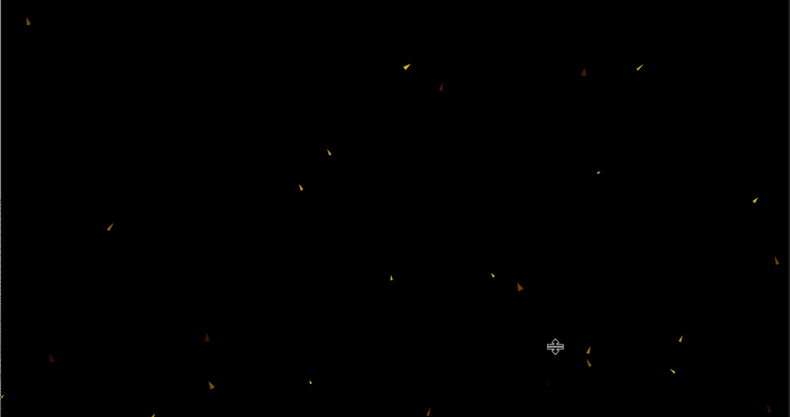

This video contains the clips used for the finals of my university classes, CDM 198 as well as CTS 040B. These were used to explain the interpolation within an animator's context. For the paper a total of 7 figures are shown, 6 of which are present in the above video compilation. There is a typo in the video as Ex.4 is marked twice. You can tell it was supposed to change when the rest of the text did.
This piece is the only one of the bunch NOT made specifically for this project. Within the paper this is Fig. 2 out of the 7 shown. Initially Ex. 3 was going to be taking this slot but after Ex.3 was finished, I decided it was too subtle to be used as an example within the paper. With my limited time leftover, I decided to include this piece as it was a fantastic example of motionogrphy where shapes are being moved and messed with using interpolation but also can be understood in a small format. This piece was initially made for DES 157 as a project where students would animate a website they designed using adobe After Effects. This is exactly as I turned it in for that class, except all of the images were erased from the original file and instead replaced with the colored bars.
Here is as it is shown in the paper:
This is Fig. 3 of the paper. The simple piece was used within the paper to show how programs/algorithms have been created to randomly place and create keyframes that a program would automatically interpolate. I made this one in After Effects as well as a part of Ex. 3 that you will see later. This was my attempt at creating a ember-like effect that can be placed onto an image using After Effect's CC Particle System. It turned out well but I had to increase its size in order for the small particles to be seen on the paper itself.
Here it is as it is shown in the paper:
This piece was going to act as Ex. 1/Fig. 2 within the paper. The art for this piece was done by my friend Natalie, but I edited similarly to how some motion designers do to some pieces. I was going to use this not only to explain how motionogrphy works, but also how interpolation can be used in multi-media projects. Interpolation can be used on anything in the arts, not just animation.
This piece specifically had me editing out the character and making the background a seperate image while keeping the removed character for animating. I made multiple frames of the character's eye moving to give the impression of blinking on loop. Alongside this, I made the character sway to add more motion. I also added the particle effect to make it seem like there was either dust or embers in the frame. Overall this involved the use of Clip Studio Paint, Photoshop, AND After Effects to put all together. I only did not use it because the motions are too subtle compared to that of the earlier shown Ex.1.
Here is what it looks like by itself:

This piece is Fig. 4 in the paper. This was my first attempt in YEARS of me trying to animate a walk cycle. while this is very rough, I found it had a lot of potential to show off how interpolation can be a tool in animation. This was the first of 3 gifs that were used to explain this. I honestly wish I could have cleaned this up but it took a longer than expected to get it to look like this as it stands.
Here is as it is shown in the paper:
This was Fig. 5 in the paper. As said before, my rough walk cycle had a lot of potential as it could be edited to be made better. This was my attempt at using interpolation within my animation software to fix motions made before. It shows how interpolation can be used as a tool to fix animations on the fly or create motion where there may have been none before. I wanted to illustrate how interpolation may look in this context so the paper has a gif showing the software so readers could see the frame being moved as the legs do. There was actually two seperate layers of leg made, so the moving bounding box only moves with the darker foreground leg.
Here is as it is shown in the paper:
This is Fig. 6 in the paper. This was the exact same as Ex. 5, but I ran this through the application known as DAIN in order to apply video frame interpolation onto this piece. It was to show the misunderstood/misuses of interpolation in animation. It shows how video frame interpolation, while essentially doing a similar job as animation interpolation, has key differences that can be seen in the piece itself. It shows artifacting as well as some stuttering that may be present when animation is ran through video frame interpolation software. Honestly I was afraid I was not going to be able to show this one in the paper as DAIN did not like my computer. This is why the interpolated video is at a lower quality than the rest of the pieces.
Here is as it is shown in the paper:

While this animation was unused in the paper, a stillframe of all of the frames were shown as Fig. 1. Initially all of my animations were going to be simple cicle animations like this one, but I wanted to put in a lot more effort for the final. While that is the case, these simple circles are great for showing off a concept without the diagram being extremely busy. This is why I kept this animation and used it's frames as a diagram used in the paper.
Here is as it is shown in the paper:
Here is what it looks like by itself: